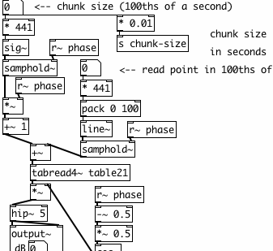

Real Time Graphical Programming
Traditionally, computer programmers used text-based programming languages to write applications. The programmer would write lines of code into a file, and then run it afterwards to see the results. Many sound or visual artists, as well as other non-programmers, find this a difficult and non-intuitive method of creating things however.
( { // example by James McCartney var signal, delay, reverb; // 10 voices of a random sine percussion sound: signal = Mix.fill(10, {Resonz.ar(Dust.ar(0.2, 50), rrand(200.0, 3200.0), 0.003)}); // reverb predelay time: delay = DelayN.ar(signal, 0.048); // 7 length modulated comb delays in parallel: reverb = Mix.fill(7,{CombL.ar(delay, 0.1, LFNoise1.ar(0.1.rand,0.04,0.05), 15)}); // two parallel chains of 4 allpass delays (8 total): 4.do{ reverb = AllpassN.ar(reverb, 0.050, [ 0.050.rand, 0.050.rand ], 1) }; // add original sound to reverb and play it: signal + (reverb * 0.2) }.play )
SuperCollider: an example of text-based programming for audio.
Graphical Programming
Pure Data, on the other hand, is a graphical programming environment. What this means is that the lines of code, which describe the functions of a program and how they interact, have been replaced with visual objects which can be manipulated on-screen. Users of Pure Data can create new programs (patches) by placing functions (objects) on the screen. They can change the way these objects behave by sending them messages and by connecting them together in different ways by drawing lines between them.

A Pure Data patch...
This visual metaphor borrows much from the history of 20th Century electronic music, where sounds were created and transformed by small electronic devices which were connected together via patch cables.

...and an analog synthesizer patch.
The sounds that were heard were the result of the types of devices the composer used and the way in which she or he connected them together. Nowadays, much of this electronic hardware has been replaced by computer software capable of making the same sounds, and many more.
Real Time
The real advantage of Pure Data is that it works in "real time". That means that changes can be made in the program even as it is running, and the user can see or hear the results immediately. This makes it a powerful tool for artists who would like to make sound or video in a live performance situation.